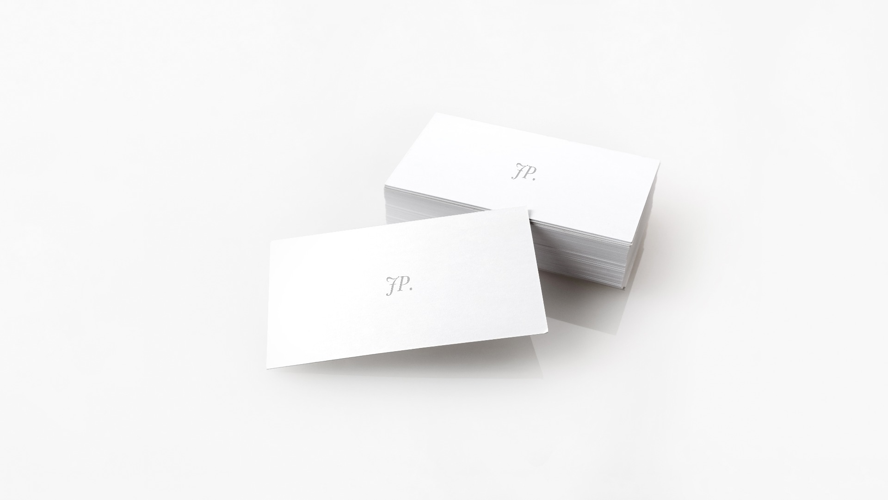

5 dicas úteis sobre Minimalismo
Menos é mais
Quando começava a pintar, tentava capturar cada pequeno objeto em grande detalhe e encaixá-lo em um quadro que já estava cheio de outros detalhes. Quando observava as pinturas mais tarde, percebia que o espectador provavelmente não sabia em que se concentrar em primeiro lugar. A minha descoberta do minimalismo foi de grande ajuda para que as minhas obras ganhassem profundidade. Por isso compartilho essas cinco dicas que podem ajudá-lo também.